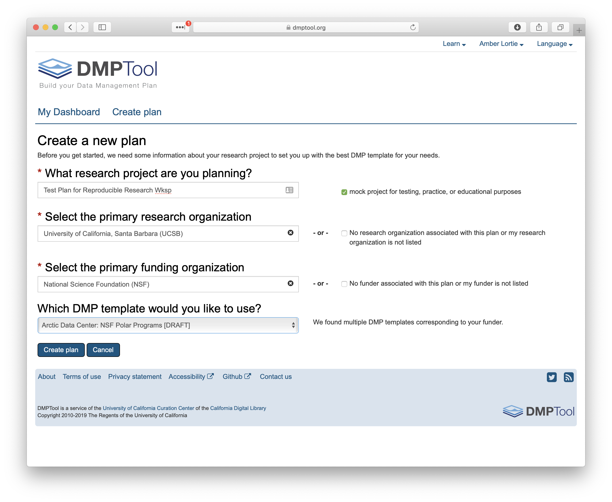

4 Writing Data Management Plans
4.1 Writing Good Data Management Plans
4.1.1 Learning Objectives
In this lesson, you will learn:
- Why create data management plans
- The major components of data management plans
- Tools that can help create a data management plan
- Features and functionality of the DMPTool
4.1.2 When to Plan: The Data Life Cycle
Shown below is one version of the Data Life Cycle that was developed by DataONE. The data life cycle provides a high level overview of the stages involved in successful management and preservation of data for use and reuse. Multiple versions of the data life cycle exist with differences attributable to variation in practices across domains or communities. It is not necessary for researchers to move through the data life cycle in a cyclical fashion and some research activities might use only part of the life cycle. For instance, a project involving meta-analysis might focus on the Discover, Integrate, and Analyze steps, while a project focused on primary data collection and analysis might bypass the Discover and Integrate steps. However, Plan is at the top of the data life cycle as it is advisable to initiate your data management planning at the beginning of your research process, before any data has been collected.

4.1.3 Why Plan?
Planning data management in advance provides a number of benefits to the researcher.
- Saves time and increases efficiency: Data management planning requires that a researcher think about data handling in advance of data collection, potentially raising any challenges before they occur.
- Engages your team: Being able to plan effectively will require conversation with multiple parties, engaging project participants from the outset.
- Allows you to stay organized: It will be easier to organize your data for analysis and reuse if you’ve made a plan about what analysis you want to run, future iterations, and more.
- Meet funder requirements: Most funders require a data management plan (DMP) as part of the proposal process.
- Share data: Information in the DMP is the foundation for archiving and sharing data with community.
4.1.4 How to Plan
- Make sure to plan from the start to avoid confusion, data loss, and increase efficiency. Given DMPs are a requirement of funding agencies, it is nearly always necessary to plan from the start. However, the same should apply to research that is being undertaken outside of a specific funded proposal.
- As indicated above, engaging your team is a benefit of data management planning. Collaborators involved in the data collection and processing of your research data bring diverse expertise. Therefore, plan in collaboration with these individuals.
- Make sure to utilize resources that are available to assist you in helping to write a good DMP. These might include your institutional library or organization data manager, online resources or education materials such as these.
- Use tools available to you; you don’t have to reinvent the wheel.
- Revise your plan as situations change or as you potentially adapt/alter your project. Like your research projects, DMPs are not static, they require changes and updates throughout the research project process.
4.1.5 What to include in a DMP
If you are writing a DMP as part of a solicitation proposal, the funding agency will have guidelines for the information they want to be provided in the plan. However, in general, a good plan will provide information on the:
study design,
data to be collected,
metadata,
policies for access,
sharing & reuse,
long-term storage & data management,
and budget.
A note on Metadata: Both basic metadata (such as title and researcher contact information) and comprehensive metadata (such as complete methods of data collection) are critical for accurate interpretation and understanding. The full definitions of variables, especially units, inside each dataset are also critical as they relate to the methods used for creation. Knowing certain blocking or grouping methods, for example, would be necessary to understand studies for proper comparisons and synthesis.
4.1.6 NSF DMP requirements
In the 2014 Proposal Preparation Instructions, Section J ‘Special Information and Supplementary Documentation’ NSF put forward the baseline requirements for a DMP. In addition, there are specific division and program requirements that provide additional detail. If you are working on a research project with funding that does not require a DMP, or are developing a plan for unfunded research, the NSF generic requirements are a good set of guidelines to follow.
Five Sections of the NSF DMP Requirements
1. Products of research
Types of data, samples, physical collections, software, curriculum materials, other materials produced during project
2. Data formats and standards
Standards to be used for data and metadata format and content (for initial data collection, as well as subsequent storage and processing)
3. Policies for access and sharing
Provisions for appropriate protection of privacy, confidentiality, security, intellectual property, or other rights or requirements
4. Policies and provisions for re-use
Including re-distribution and the production of derivatives
5. Archiving of data
Plans for archiving data, samples, research products and for preservation of access
4.1.6.1 Individual Reflection
Now that we’ve discussed the data life cycle, how to plan, what to generally include in a DMP, and the NSF DMP requirements - take five minutes to go through each required section for a NSF DMP and write down some initial thoughts on how you would approach completing those sections. What information would you include? How would you plan to answer the questions? What do you need to answer the questions in each section?
After we’ll get into groups to further discuss.
4.1.6.2 Group Discussion
Let’s split up into five groups; one group for each required section of a NSF DMP. As a group, share your initial thoughts about the section you’ve been assigned to and together as a group discuss how you would complete that section. Select someone in the group to share your approach to the whole class. Take the next 10-15 minutes for group discussion.
Some guiding questions:
- What information do you need to complete the section? Think both broadly and detailed.
- Do you need to reference outside materials to complete the section? Is this information already known / found or is additional research required?
- What is the relevant, key information necessary for the research to be understood for either your future self or for someone new to the data? What information would you want to know if you were given a new project to work on? Being explicit and including details are important to think about for this question.
- What workflows, documentation, standards, maintenance, tools / software, or roles are required?
4.1.7 Tools in Support of Creating a DMP
The DMPTool and DMP Online are both easy to use web based tools that support the development of a DMP. The tools are partnered and share a code base; the DMPTool incorporates templates from US funding agencies and the DMP Online is focused on EU requirements.
4.1.7.1 Quick Tips for DMPTool
There is no requirement to answer all questions in one sitting. Completing a DMP can require information gathering from multiple sources. Saving the plan at any point does not submit the plan, it simply saves your edits. This means you can move between sections in any order or save as you go.
You can collaborate in DMPTool which keeps all commentary together, saves time on collaboration, and makes it easy to access the most current version at any time since it is always available in DMPTool.
4.1.8 Arctic Data Center Support for DMPs
To support researchers in creating DMPs that fulfills NSF template requirements and provides guidance on how to work with the Arctic Data Center for preservation, we have created an Arctic Data Center template within the DMPTool. This template walks researchers through the questions required by NSF and includes recommendations directly from the Arctic Data Center team.

When creating a new plan, indicate that your funding agency is the National Science Foundation and you will then have the option to select a template. Here you can choose the Arctic Data Center.

As you answer the questions posed, guidance information from the Arctic Data Center will be visible under the ‘NSF’ tab on the right hand side. An example answer is also provided at the bottom. It is not intended that you copy and paste this verbatim. Rather, this is example prose that you can refer to for answering the question.

4.1.10 Additional Resources
The article Ten Simple Rules for Creating a Good Data Management Plan is a great resource for thinking about writing a data management plan and the information you should include within the plan.